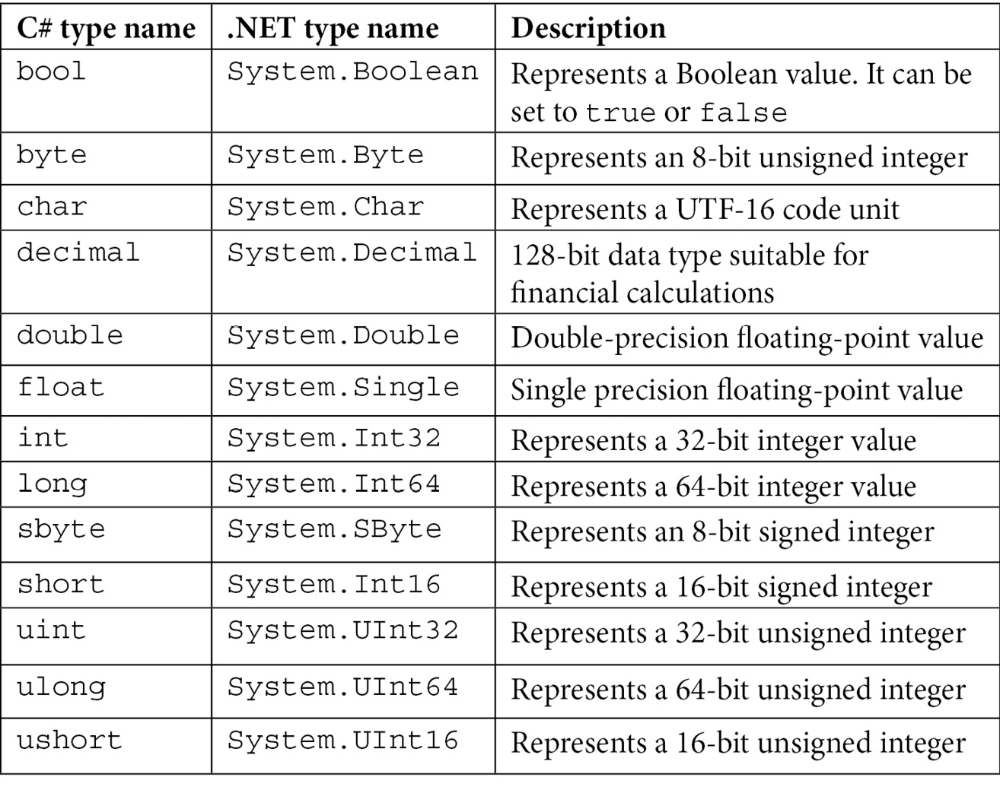
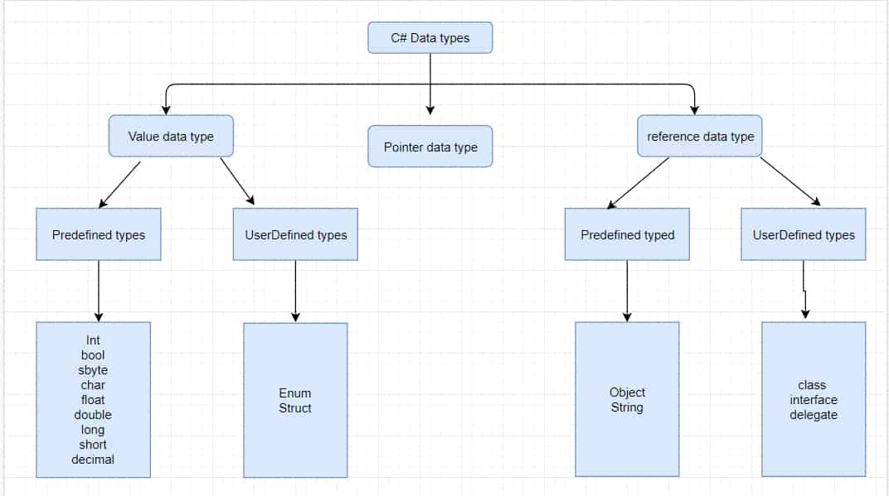

C# Veri Türleri nedir?
C# da veri türleri 3'e ayrılır:
Value Data Types( Değer Veri Türleri )
Değişken değerini doğrudan bellekte depolayan ve hem işaretli hem de işaretsiz literalleri kabul eden veri türleridir. Kendi içinde ikiye ayrılır:

Built in Type(Yerleşik Tür)
Yerleşik olarak tanımlanmış olan değer ve başvuru türlerini ifade eder. Değer türleri, değişken değerini doğrudan bellekte depolayan ve hem işaretli hem de işaretsiz literalleri kabul eden veri türleridir. Başvuru türleri ise, veriyi değil, verinin bulunduğu bellek adresini depolayan veri türleridir. C# dilinde, her bir yerleşik türün bir .NET tipi ile eşdeğer olduğu söylenebilir. Örneğin, C# int tipi, .NET System.Int32 tipine karşılık gelir.
User defined Type(Kullanıcı Tanımlı Tür)
kullanıcı tarafından tanımlanan bir veri türüdür. Kullanıcı tanımlı türler, .NET Framework’te yerleşik olarak bulunan türlerin dışında, programcının ihtiyaçlarına göre oluşturduğu türlerdir. struct(yapı) ve enum(numaralandırma) örnek verilebilir.
Nedir Bu Struct(Yapı)?
Struct bir çok yönden class'a benzer. Örneğin, property (özellik), constructor (yapıcı), method (metot) ve field (alan) gibi üyeler içerebilir. ek olarak interface(arayüz) uygulanabilir. Temelde class'ta olup da struct da olmayan 2 şey vardır. Struct, inheritance(Kalıtım) desteklemez. Struct bellegin stack bölümünde depolanırken class belleğin heap bölümünde depolanır. Bu da struct’ın performans açısından daha avantajlı olmasını sağlar. stack ve heap kavramları hakkında detaylı bilgi öğrenmek için stack ve heap ile ilgili yazımızdan öğrenebilirsiniz.
Nedir Bu Enum(numaralandırma)?
Enum, sabit değerler ile çalışmamız gerektiğinde kullanabileceğimiz bir veri tipidir. Enum, programı daha okunabilir ve anlaşılır kılmak için sayısal değerlere isim vermemizi sağlar. Örneğin, haftanın günlerini sayılarla ifade etmek yerine, enum ile isimlendirebiliriz. Böylece, kodumuzda günleri daha kolay kullanabilir ve okuyabiliriz. Enum tanımlamak için enum anahtar kelimesini kullanırız. Enum üyelerinin varsayılan temel tipi int’tir ve sıfırdan başlayarak birer artar. Farklı bir temel tip belirtmek veya üyelerin değerlerini değiştirmek istiyorsak, bunu açıkça yapabiliriz. Enum üyelerine string değer atayamayız, ancak string olarak dönüştürebiliriz.

Referance Data Types( Referans Veri Türleri )
Referans tipleri, bellekte veriyi değil, verinin adresini tutan veri tipleridir. Referans tipleri, nesne olarak adlandırılan ve heap bölgesinde oluşturulan veri yapılarına işaret ederler. Referans tipleri, değer tiplerinden farklı olarak bellekte daha fazla yer kaplarlar ve kopyalanmaları daha yavaştır. Ayrıca, referans tipleri ile çalışırken null değeri kullanılabilir. Kendi içinde ikiye ayrılır:
Built in Type(Yerleşik Tür)
Referance Data Type(Referans Veri Türü) da yerleşik tür, .NET kütüphanesinde tanımlanmış olan ve başka bir türden türemeyen bir başvuru türüdür. Başvuru türleri, bellekte bir nesnenin adresini tutan değişkenlerdir. C# dilinde, üç yerleşik başvuru türü vardır:
Tüm diğer türlerin temel türüdür. object, herhangi bir türdeki veriyi tutabilir ve kutulama ve kutu açma işlemlerine izin verir.
Unicode karakter dizilerini temsil eder. string, değiştirilemez bir başvuru türüdür ve eşitlik işleçleri == ve != değer tabanlı karşılaştırmalar yapar.
Derleme zamanında değil, çalışma zamanında belirlenen bir türü temsil eder. dynamic, COM nesneleri, IronPython ve IronRuby gibi dinamik diller ve yansıma gibi senaryolar için kullanışlıdır.
User defined Type(Kullanıcı Tanımlı Tür)
Kullanıcının kendi tanımladığı bir başvuru türüdür. Başvuru türleri, bellekte bir nesnenin adresini tutan değişkenlerdir. C# dilinde, class, interface, array ve delegate gibi kendi başvuru türlerinizi tanımlayabilirsiniz.
Class,bir nesnenin özelliklerini ve davranışlarını tanımlayan bir referans türüdür.
Interface, bir grup ilgili işlevselliği tanımlayan ve bir soyut olmayan sınıfın veya bir struct’ın uygulaması gereken bir sözleşmedir.
Array, aynı türden birden fazla değeri tek bir değişkende depolamak için kullanılan bir veri yapısıdır.
Bir veya daha fazla metodu temsil eden ve metot çağrılarını dinamik olarak yönlendiren bir başvuru türüdür. delegate, olaylar ve anonim metotlar gibi ileri düzey programlama özelliklerini destekler.
Pointer Data Types( İşaretleyici Veri Türleri )
Bir başka değişkenin bellek adresini tutan bir değişken türüdür. C# pointer’ları, C veya C++ pointer’ları ile aynı yeteneklere sahiptir. Pointer’lar, bellekteki verileri doğrudan okuyabilir ve değiştirebilir. Pointer’lar, referans türlerinden farklı olarak, garbage collector(çöp toplayıcı) tarafından izlenmez ve taşınmaz. Pointer’lar, sadece yönetilmeyen türleri işaret edebilir. Yönetilmeyen türler, temel veri türleri, enum türleri, diğer pointer türleri ve sadece yönetilmeyen türler içeren struct’lar gibi türlerdir.